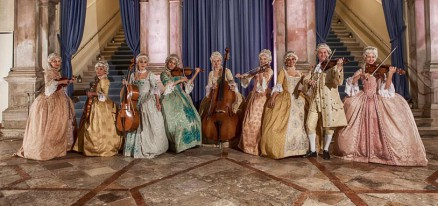

Music
Venice is known for the Venetian school where famous composers attended, like Andrea Gabrieli, Costanzo Porta and Claudio Merulo. Types of music varied from church music to opera music. The most popular opera house in Venice is La Fenice. Antonio Vivaldi in Venice is known for his unique music style in baroque. Antionio Vivaldi was not only a composer, he was also virtuoso violinist, teacher and cleric. Vivaldi was composing for all music instruments. His best known work is called The four Seasons. His operas Ottone in villa, Orlano finto pazzo and Nerone fatto Cesare were the most popular. Vivaldi's music is formal and playful, Johann Sebastian Bach was influenced by his music. During his period he was popular in many European countries. Some works were also sonatas and symphonies.
